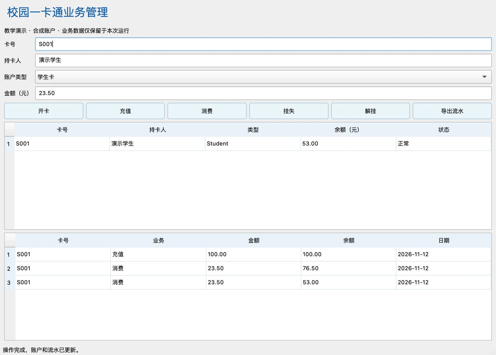

开放学习 · 从第一次提交开始
THE GIT LEARNING COMPANION
理解变化。
掌握协作。
从文件的一个版本，到团队的共同历史。
沿着清晰的概念、可观察的图解与可复现的实验，
一步一步，读懂 Git 的来龙去脉。
17章由浅入深的完整路径
218题分层练习与详细解析
251图从机制到场景的可视化
1个项目C++ / Qt 企业协作实训
01 / LEARNING PATH
一条通向独立协作的学习路径
四篇十七章，先建立模型，再进入机制，最终走向工程。
基础篇
建立版本控制思维，完成第一次提交。
核心篇
沿着分支、合并与远程交换，理解协作。
进阶篇
进入对象、引用与历史，解释命令的机制。
实践篇
把知识带入团队，完成真实的工程交付。
02 / LEARN BY OBSERVING
试试看：一次提交，记录了什么？
在这个简化模型中，修改工作文件、暂存、提交，观察三份内容的变化。
01 · HEAD
已提交快照
line 1历史中已经保存的内容
02 · INDEX
下一次提交候选
line 1git add 更新这里
03 · WORKTREE
当前工作文件
line 1编辑文件改变这里
先追加一行，再暂存；暂存后继续编辑，最后提交。看看哪一行进入了历史。
理解索引为何存在，阅读第3章 →03 / BUILD SOMETHING TOGETHER
把 Git 带进
一个完整的项目。
从需求与接口开始，用分支承载功能开发，用评审与测试把关，用标签交付版本。在校园一卡通项目中，把零散命令连接成团队的工作方法。
进入综合项目实训 →
YOUR NEXT COMMIT STARTS HERE
每一步，都知道为什么。
无需预备 Git 知识。从第一章出发，建立属于自己的版本控制思维。
开始学习 ↗继续上次阅读 →